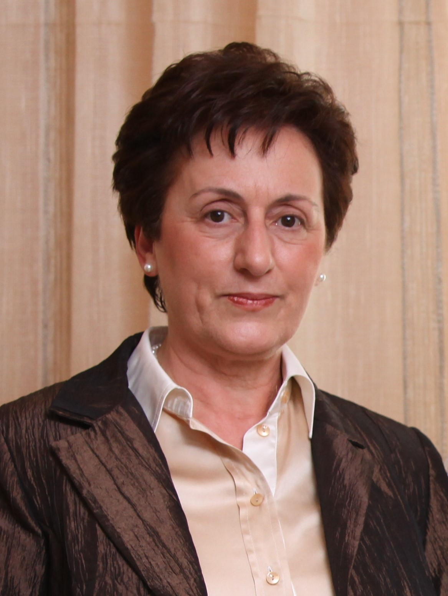

<div class="row">
    <div class="col-md-12">
        <h3>Keynote Speakers</h3>
        <p class="lead lead-sm">
                <h4 name="key1">Keynote I: Scheduling Real-Time Applications in the Cloud and in the Fog

</h4>
                
                <b>Helen_Karatza <i>Professor Emeritus, Department of Informatics, 
			Aristotle University of Thessaloniki, Greece</b>
</i> 	</p><p>	
                <b>Abstract</b>: For several years cloud computing has been a very popular computing paradigm for the deployment and execution of time-sensitive applications. It provides infrastructure from its virtually infinite pool of resources billed in a pay-as-you-go basis that enables the cloud users to run their applications in a cost-effective way.
</p><p>For efficient cloud performance and quality of service, issues related to resource allocation, application scheduling, timeliness, cost and energy conservation need to be addressed. A particularly challenging issue is to run complex real-time applications in the cloud. Effective scheduling policies should be used ensuring that real-time applications will meet their deadlines as well as the overall quality of service will be improved.
</p><p>Due to the explosive growth of Internet of Things (IoT) paradigm, fog computing has appeared recently as a novel computing model beyond cloud computing to face problems related to large network traffic and communication delay. The majority of the IoT applications are real-time as decisions must be made in a short time. Therefore, new resource allocation techniques and scheduling policies are required for efficient utilization of the resources and for timeliness. Delay-sensitive applications should be assigned to appropriate resources at the fog and cloud layers, based on their communication and computational characteristics. 
</p><p>	In this talk we will focus on techniques and solutions to address the challenges faced in resource allocation and scheduling of real-time applications in the cloud and in the fog and we will provide future trends in the cloud and fog computing area. 

		</p><p>			
				
				<b>Biography</b>: Helen Karatza is a Professor Emeritus in the Department of Informatics at the Aristotle University of Thessaloniki, Greece, where she teaches courses in the postgraduate and undergraduate level and carries out research. Dr. Karatza's research interests include Computer Systems Modeling and Simulation, Performance Evaluation, Fog and Cloud Computing, Energy Efficiency in Large Scale Distributed Systems, Resource Allocation and Scheduling and Real-time Distributed Systems. 
	</p><p>	Dr. Karatza has authored or co-authored over 225 technical papers and book chapters including five papers that earned best paper awards at international conferences. She is senior member of IEEE, ACM and SCS, and she served as an elected member of the Board of Directors at Large of the Society for Modeling and Simulation International. She served as Chair and Keynote Speaker in International Conferences.
	</p><p>	Dr. Karatza is the Editor-in-Chief of the Elsevier Journal “Simulation Modeling Practice and Theory”. She was Editor-in-Chief of “Simulation Transactions of The Society for Modeling and Simulation International”, Associate Editor of “ACM Transactions on Modeling and Computer Simulation” and Senior Associate Editor of the “Journal of Systems and Software” of Elsevier. She served as Guest Editor of Special Issues in International Journals. More info about her activities/publications can be found in <a href="http://agent.csd.auth.gr/~karatza/" target_new>http://agent.csd.auth.gr/~karatza/</a>.
	</p>

    
    </div>
</div>
